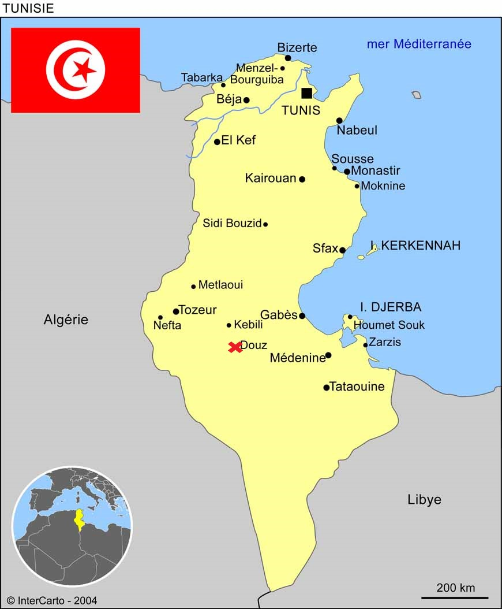

Cellule Familliale
Je m’appelle Youssef, je vis actuellement avec mon père, ma mère, mes deux
petits frère Ayoub et Haroun et mes deux sœurs Fatma et Zaieneb et on vit
dans un appartement. On est une famille tunisienne qui est venu en France
il y a quelques années.
Quand j’aurai 25 ans, je pense vivre avec ma femme
dans une maison ou dans un appartement. Je garderai toujours une bonne relation
avec ma famille et mes cousins.

Cercle Amical
Au lycée, j’ai plusieurs amis qui m’aide à faire passer le temps
en temps de pause. J’ai une bonne relation avec mes cousins, je les
appelle une fois par semaine car ils ne sont pas en France.
A 25 ans, je pense que j’aurai des nouveaux amis, des collègues de travail, et pour
mes cousins ils vont peut-être réussir dans la vie et travailler en France
Lieux D'Apprentissages
A la maison, j’essaie d’améliorer mes notes donc je continuer de réviser
les matières importantes, mais en dehors du lycée je continu d’apprendre
l’Arabe pour ne pas l’oublier et d’apprendre plus sur ma religion soit seul
ou avec des vidéos.
A 25 ans, je pense continuer d'apprendre l’Arabe car c’est une langue difficile
mais aussi d’apprendre plus sur ma religion. Je veux aussi faire de formation pour
améliorer mon travail.
Lieux D'Activités
Actuellement, je fais parfois du foot au stade d'à côté avec des amis et je fais
souvent du vélo. A la maison, quand je m'ennuie, je regarde une video youtube pour
faire passer le temps
A 25 ans, je pense m’inscrire à une salle
de musculation et je vais continuer le foot
Réseaux Sociaux
J’utilise Instagram pour discuter avec des et pour être
présent dans les groupes de classe.
A 25 ans, cette situation va changer je pense ne plus utiliser les réseaux sociaux sauf YouTube
Lieux De Cultes
Dans la semaine je vais au moins une fois à la mosquée et à la maison
j’essaie d’apprendre plus sur la religion.
A 25 ans, je pense améliorer cette situation et de continuer d’apprendre avec ma femme
Animaux De Compagnie
Je n’ai pas d’animal de compagnie et je ne compte pas en avoir à 25 ans